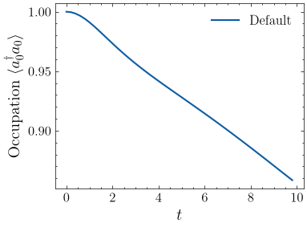
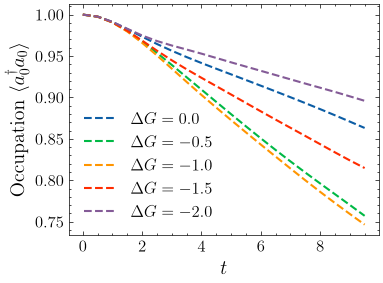

Time Evolution using Renormalizer¶
Overview¶
In this notebook we will simulate the charge transfer between two molecules using the Marcus model
with transfer integral \(V=-0.1\), dimensionless coupling constant \(g=1\), vibration frequency \(\omega=0.5\).
We will first show how to use Renormalizer to simulation the time evolution at \(\Delta G = 0\). Then, we will show that, by decreasing the reaction Gibbs free energy change \(\Delta G\), the reaction rate will first increase and then decrease, as predicted by the Marcus theory.
Preparation: Setting Up Logger¶
[1]:
from renormalizer.utils.log import package_logger as logger
2026-10-14 07:46:13,115[INFO] Use numpy as backend
2026-10-14 07:46:13,116[INFO] numpy random seed is 9012
2026-10-14 07:46:13,117[INFO] backend random seed is 2019
2026-10-14 07:46:13,117[INFO] random seed is 1092
2026-10-14 07:46:13,125[INFO] Git Commit Hash: 3507afde83fd6f408c1c2198aad4dfe455d88312
[2]:
logger.debug("logger output")
2026-10-14 07:46:13,935[DEBUG] logger output
[3]:
from renormalizer.utils.log import set_stream_level, INFO
[4]:
# filter logger output
set_stream_level(INFO)
[5]:
logger.debug("This message will not be shown")
[6]:
logger.info("Logger output")
2026-10-14 07:46:13,952[INFO] Logger output
Define the Model and Initial State¶
[7]:
from renormalizer import Op, BasisMultiElectron, BasisSHO, Model
import numpy as np
[8]:
v = -0.1
g = 1
omega = 0.5
nbas = 16
[9]:
def get_model(delta_g):
ham_terms = v * Op(r"a^\dagger a", ["e0", "e1"]) + v * Op(r"a^\dagger a", ["e1", "e0"])
ham_terms += delta_g * Op(r"a^\dagger a", "e1")
for i in range(2):
ham_terms += omega * Op(r"b^\dagger b", f"v{i}")
ham_terms += g * omega * Op(r"a^\dagger a", f"e{i}") * Op(r"b^\dagger+b", f"v{i}")
basis = [BasisMultiElectron(["e0", "e1"], [0, 0]), BasisSHO("v0", omega, nbas), BasisSHO("v1", omega, nbas)]
return Model(basis, ham_terms)
[10]:
# using a relaxed initial state
def get_init_condition():
basis = BasisSHO(0, omega, nbas)
state = np.linalg.eigh(basis.op_mat(r"b^\dagger b") + g * basis.op_mat(r"b^\dagger+b"))[1][:, 0]
return {"v0": state}
init_condition = get_init_condition()
Time Evolution with the Default Configuration¶
Next, we run the simulation using the evolve method in the Mps class. At this phase, we keep \(\Delta G = 0\).
[11]:
delta_g = 0
model = get_model(delta_g)
[12]:
from renormalizer import Mps, Mpo
[13]:
# Hamiltonian MPO
mpo = Mpo(model)
# The occupation of e0
n_op = Mpo(model, Op(r"a^\dagger a", "e0"))
[14]:
# initialize the MPS
mps = Mps.hartree_product_state(model, condition=init_condition)
# time evolution step
dt = 0.2
# record the electronic occupation
n_list = []
for i_step in range(50):
n = mps.expectation(n_op)
logger.info(f"Step {i_step}. Time {i_step * dt:.2f}. $n$ {n}")
# perform time evolution. Note that the evolution is not in-place.
mps = mps.evolve(mpo, dt)
n_list.append(n)
2026-10-14 07:46:13,998[INFO] Step 0. Time 0.00. $n$ 0.9999999999999997
2026-10-14 07:46:14,010[INFO] Step 1. Time 0.20. $n$ 0.9996030537865599
2026-10-14 07:46:14,020[INFO] Step 2. Time 0.40. $n$ 0.9984313966561627
2026-10-14 07:46:14,031[INFO] Step 3. Time 0.60. $n$ 0.9965532876450582
2026-10-14 07:46:14,041[INFO] Step 4. Time 0.80. $n$ 0.9940731362639054
2026-10-14 07:46:14,051[INFO] Step 5. Time 1.00. $n$ 0.9911161868842484
2026-10-14 07:46:14,061[INFO] Step 6. Time 1.20. $n$ 0.9878132450238745
2026-10-14 07:46:14,070[INFO] Step 7. Time 1.40. $n$ 0.9842873078294339
2026-10-14 07:46:14,080[INFO] Step 8. Time 1.60. $n$ 0.9806441927926957
2026-10-14 07:46:14,090[INFO] Step 9. Time 1.80. $n$ 0.9769677466243794
2026-10-14 07:46:14,100[INFO] Step 10. Time 2.00. $n$ 0.9733182226560814
2026-10-14 07:46:14,110[INFO] Step 11. Time 2.20. $n$ 0.9697373081106375
2026-10-14 07:46:14,120[INFO] Step 12. Time 2.40. $n$ 0.966249701675341
2026-10-14 07:46:14,129[INFO] Step 13. Time 2.60. $n$ 0.9628671609457058
2026-10-14 07:46:14,140[INFO] Step 14. Time 2.80. $n$ 0.9595919026133976
2026-10-14 07:46:14,150[INFO] Step 15. Time 3.00. $n$ 0.956419752167962
2026-10-14 07:46:14,160[INFO] Step 16. Time 3.20. $n$ 0.9533423734970333
2026-10-14 07:46:14,170[INFO] Step 17. Time 3.40. $n$ 0.9503492089387036
2026-10-14 07:46:14,180[INFO] Step 18. Time 3.60. $n$ 0.9474287391824951
2026-10-14 07:46:14,190[INFO] Step 19. Time 3.80. $n$ 0.9445692798814911
2026-10-14 07:46:14,201[INFO] Step 20. Time 4.00. $n$ 0.9417594196434943
2026-10-14 07:46:14,215[INFO] Step 21. Time 4.20. $n$ 0.9389883140168834
2026-10-14 07:46:14,228[INFO] Step 22. Time 4.40. $n$ 0.9362456942950406
2026-10-14 07:46:14,240[INFO] Step 23. Time 4.60. $n$ 0.9335221984937241
2026-10-14 07:46:14,251[INFO] Step 24. Time 4.80. $n$ 0.9308095732941706
2026-10-14 07:46:14,261[INFO] Step 25. Time 5.00. $n$ 0.9281008849250421
2026-10-14 07:46:14,272[INFO] Step 26. Time 5.20. $n$ 0.9253906107085335
2026-10-14 07:46:14,283[INFO] Step 27. Time 5.40. $n$ 0.9226738471654728
2026-10-14 07:46:14,294[INFO] Step 28. Time 5.60. $n$ 0.9199478805518422
2026-10-14 07:46:14,304[INFO] Step 29. Time 5.80. $n$ 0.917209461833141
2026-10-14 07:46:14,315[INFO] Step 30. Time 6.00. $n$ 0.9144551950424464
2026-10-14 07:46:14,325[INFO] Step 31. Time 6.20. $n$ 0.9116816732036944
2026-10-14 07:46:14,335[INFO] Step 32. Time 6.40. $n$ 0.9088859026726789
2026-10-14 07:46:14,346[INFO] Step 33. Time 6.60. $n$ 0.9060659656334908
2026-10-14 07:46:14,357[INFO] Step 34. Time 6.80. $n$ 0.9032210121837201
2026-10-14 07:46:14,367[INFO] Step 35. Time 7.00. $n$ 0.9003515623906609
2026-10-14 07:46:14,378[INFO] Step 36. Time 7.20. $n$ 0.8974590790192777
2026-10-14 07:46:14,391[INFO] Step 37. Time 7.40. $n$ 0.8945453849965331
2026-10-14 07:46:14,401[INFO] Step 38. Time 7.60. $n$ 0.8916120979060874
2026-10-14 07:46:14,411[INFO] Step 39. Time 7.80. $n$ 0.8886602437062087
2026-10-14 07:46:14,422[INFO] Step 40. Time 8.00. $n$ 0.8856902107426251
2026-10-14 07:46:14,433[INFO] Step 41. Time 8.20. $n$ 0.8827020259679251
2026-10-14 07:46:14,445[INFO] Step 42. Time 8.40. $n$ 0.8796958667524071
2026-10-14 07:46:14,456[INFO] Step 43. Time 8.60. $n$ 0.8766726737398555
2026-10-14 07:46:14,466[INFO] Step 44. Time 8.80. $n$ 0.8736347299848457
2026-10-14 07:46:14,477[INFO] Step 45. Time 9.00. $n$ 0.8705861034366988
2026-10-14 07:46:14,488[INFO] Step 46. Time 9.20. $n$ 0.867532873755651
2026-10-14 07:46:14,499[INFO] Step 47. Time 9.40. $n$ 0.8644830817098138
2026-10-14 07:46:14,510[INFO] Step 48. Time 9.60. $n$ 0.8614463370235247
2026-10-14 07:46:14,521[INFO] Step 49. Time 9.80. $n$ 0.858433004390228
[15]:
# plotting the occupation
from matplotlib import pyplot as plt
plt.style.use("mm.mplstyle")
plt.plot(np.arange(len(n_list)) * dt, n_list, label="Default")
plt.xlabel("$t$")
plt.ylabel(r"Occupation $\langle a^\dagger_0 a_0 \rangle$")
plt.legend()
plt.show()

In this example, the time evolution is performed with default time evolution configuration and MPS compression configuration.
Renormalizer by default uses the RK4 “propagation and compression” method for time evolution. The advantage of the method is that it is easy to understand and setup.
Please refer to our recent review for a discussion of the different time evolution schemes.
[16]:
mps.evolve_config.method
[16]:
<EvolveMethod.prop_and_compress: 'P&C'>
Regarding MPS compression/truncation configuration, Renormalizer by default employs a truncation scheme based on the the singular value threshold.
[17]:
mps.compress_config.criteria, mps.compress_config.threshold
[17]:
(<CompressCriteria.threshold: 'threshold'>, 0.001)
Inspection of the dimension of the final mps after time evolution shows that the compression is efficient.
[18]:
mps.bond_dims
[18]:
[1, 2, 4, 1]
Configuring Time Evolution¶
In order to configure the time evolution, you should update the evolve_config and compress_config attributes of an MPS instance. These attributes are instances of the EvolveConfig class and the CompressConfig class. Please see the API referece for full options of the configuration classes.
[19]:
from renormalizer.utils.configs import CompressConfig, CompressCriteria
[20]:
# update the compresssion configuration. Adopt a fixed bond dimension of 8
mps.compress_config = CompressConfig(CompressCriteria.fixed, max_bonddim=8)
Next, we perform one more step of the time evolution, and the bond dimension in the middle of the MPS is increased from 4 to 8, according to the updated compression configuration.
[21]:
new_mps = mps.evolve(mpo, dt)
new_mps.bond_dims
[21]:
[1, 2, 8, 1]
Recent studies have shown that methods based on time dependent variantional principle (TDVP) show higher accuracy and efficiency. In our production runs, we usually employ one-site TDVP with projector splitting (TDVP-PS) for time evolution. TDVP-PS allows much larger time evolution step size and reduces memory consumption. However, its setup is a little more complex than propagation and compression, since one-site TDVP generally can not adjust bond dimension during time evolution.
[22]:
from renormalizer.utils.configs import EvolveConfig, EvolveMethod
[23]:
mps.evolve_config = EvolveConfig(EvolveMethod.tdvp_ps)
Next, we perform one more step of the time evolution using TDVP-PS.
Note that the bond dimension in the middle of the MPS does not increase from 4 to 8. This is because one-site TDVP-PS does not alter the bond dimension.
In order to perform one-site TDVP-PS time evolution, it is imperative to increase the bond dimension of the MPS first, and then perform the time evolution.
[24]:
new_mps = mps.evolve(mpo, dt)
new_mps.bond_dims
[24]:
[1, 2, 4, 1]
The expand_bond_dimension function increases the bond dimension to target value specified by the compress_config. In short, the function adds the vectors in the Krylov space \(H^n|\psi\rangle\) to the input wavefunction \(|\psi\rangle\), and then compresses it to the target bond dimension. expand_bond_dimension works with fixed bond dimension compression configuration, instead of singular value truncation threshold.
The include_ex option is specifically designed for systems with quantum number conservation. If the initial wavefunction does not include contributions from a certain symmetry sector, these contributions will not reappear during time evolution due to the projection error in TDVP. Setting include_ex=True will add a small perturbation to the initial state to help recover the missing symmetry sector contributions. In our case, the quantum number conservation is disabled, so we set
include_ex=False.
[25]:
new_mps = mps.expand_bond_dimension(mpo, include_ex=False)
new_mps.bond_dims
[25]:
[1, 2, 8, 1]
Observing Marcus Inverted Region¶
Next, we put everything together and perform time evolution with different \(\Delta G\) using TDVP-PS. Since the initial state of time evolution is a Hartree product state, we must expand the bond dimension before performing the time evolution.
[26]:
# time evolution step
dt = 0.5
# initialize the MPS in the Hartree product state
init_mps = Mps.hartree_product_state(model, condition=init_condition)
logger.info(f"Initial MPS bond dimension: {init_mps.bond_dims}")
# setup compression configuration
init_mps.compress_config = CompressConfig(CompressCriteria.fixed, max_bonddim=8)
# setup time evolution configuration
init_mps.evolve_config = EvolveConfig(EvolveMethod.tdvp_ps)
# record the electronic occupation
n_list_list = []
delta_g_list = np.linspace(0, -2, 5)
for delta_g in delta_g_list:
# reconstruct the Hamiltonian. We can reuse the occupation operator though
model = get_model(delta_g)
mpo = Mpo(model)
# since using TDVP-PS, expand the bond dimension to target value.
# otherwise the time evolution is limited to the Hartree product state.
mps = init_mps.expand_bond_dimension(mpo, include_ex=False)
logger.info(f"MPS bond dimension after expanding: {mps.bond_dims}")
n_list = []
for i_step in range(20):
n = mps.expectation(n_op)
logger.info(f"Step {i_step}. Time {i_step * dt:.2f}. $n$ {n}")
# perform time evolution. Note that the evolution is not in-place.
mps = mps.evolve(mpo, dt)
n_list.append(n)
n_list_list.append(n_list)
2026-10-14 07:46:16,591[INFO] Initial MPS bond dimension: [1, 1, 1, 1]
2026-10-14 07:46:16,606[INFO] MPS bond dimension after expanding: [1, 2, 8, 1]
2026-10-14 07:46:16,608[INFO] Step 0. Time 0.00. $n$ 1.0
2026-10-14 07:46:16,626[INFO] Step 1. Time 0.50. $n$ 0.9975776788496082
2026-10-14 07:46:16,641[INFO] Step 2. Time 1.00. $n$ 0.9911341778211976
2026-10-14 07:46:16,656[INFO] Step 3. Time 1.50. $n$ 0.9824981838275649
2026-10-14 07:46:16,670[INFO] Step 4. Time 2.00. $n$ 0.973328341828368
2026-10-14 07:46:16,684[INFO] Step 5. Time 2.50. $n$ 0.9645218516469473
2026-10-14 07:46:16,698[INFO] Step 6. Time 3.00. $n$ 0.9563382368491803
2026-10-14 07:46:16,711[INFO] Step 7. Time 3.50. $n$ 0.9487304333892248
2026-10-14 07:46:16,725[INFO] Step 8. Time 4.00. $n$ 0.941553398189528
2026-10-14 07:46:16,738[INFO] Step 9. Time 4.50. $n$ 0.9346400325048939
2026-10-14 07:46:16,752[INFO] Step 10. Time 5.00. $n$ 0.9278351842224875
2026-10-14 07:46:16,765[INFO] Step 11. Time 5.50. $n$ 0.9210298996173275
2026-10-14 07:46:16,779[INFO] Step 12. Time 6.00. $n$ 0.9141749831328396
2026-10-14 07:46:16,792[INFO] Step 13. Time 6.50. $n$ 0.9072563582335631
2026-10-14 07:46:16,806[INFO] Step 14. Time 7.00. $n$ 0.9002591285942486
2026-10-14 07:46:16,819[INFO] Step 15. Time 7.50. $n$ 0.8931521085331834
2026-10-14 07:46:16,833[INFO] Step 16. Time 8.00. $n$ 0.8858943878858214
2026-10-14 07:46:16,847[INFO] Step 17. Time 8.50. $n$ 0.8784553598605096
2026-10-14 07:46:16,861[INFO] Step 18. Time 9.00. $n$ 0.8708472420376298
2026-10-14 07:46:16,874[INFO] Step 19. Time 9.50. $n$ 0.8631616549212833
2026-10-14 07:46:16,900[INFO] MPS bond dimension after expanding: [1, 2, 8, 1]
2026-10-14 07:46:16,901[INFO] Step 0. Time 0.00. $n$ 0.9999999999999999
2026-10-14 07:46:16,915[INFO] Step 1. Time 0.50. $n$ 0.9975401925879055
2026-10-14 07:46:16,929[INFO] Step 2. Time 1.00. $n$ 0.9906013628490244
2026-10-14 07:46:16,942[INFO] Step 3. Time 1.50. $n$ 0.9802488858640312
2026-10-14 07:46:16,956[INFO] Step 4. Time 2.00. $n$ 0.9676593608104599
2026-10-14 07:46:16,969[INFO] Step 5. Time 2.50. $n$ 0.9537696503059963
2026-10-14 07:46:16,983[INFO] Step 6. Time 3.00. $n$ 0.9392072948520425
2026-10-14 07:46:16,997[INFO] Step 7. Time 3.50. $n$ 0.9243586104259062
2026-10-14 07:46:17,012[INFO] Step 8. Time 4.00. $n$ 0.9094397848357545
2026-10-14 07:46:17,025[INFO] Step 9. Time 4.50. $n$ 0.8945511232281889
2026-10-14 07:46:17,039[INFO] Step 10. Time 5.00. $n$ 0.879743003866307
2026-10-14 07:46:17,052[INFO] Step 11. Time 5.50. $n$ 0.8650797798242403
2026-10-14 07:46:17,066[INFO] Step 12. Time 6.00. $n$ 0.850651921806161
2026-10-14 07:46:17,079[INFO] Step 13. Time 6.50. $n$ 0.8365374567167936
2026-10-14 07:46:17,093[INFO] Step 14. Time 7.00. $n$ 0.8227688239626165
2026-10-14 07:46:17,106[INFO] Step 15. Time 7.50. $n$ 0.809330061762551
2026-10-14 07:46:17,120[INFO] Step 16. Time 8.00. $n$ 0.7961632960751609
2026-10-14 07:46:17,134[INFO] Step 17. Time 8.50. $n$ 0.7831685752127808
2026-10-14 07:46:17,147[INFO] Step 18. Time 9.00. $n$ 0.770200067780851
2026-10-14 07:46:17,161[INFO] Step 19. Time 9.50. $n$ 0.7570646850942906
2026-10-14 07:46:17,187[INFO] MPS bond dimension after expanding: [1, 2, 8, 1]
2026-10-14 07:46:17,188[INFO] Step 0. Time 0.00. $n$ 1.0
2026-10-14 07:46:17,202[INFO] Step 1. Time 0.50. $n$ 0.9975277339592454
2026-10-14 07:46:17,215[INFO] Step 2. Time 1.00. $n$ 0.9904261839751382
2026-10-14 07:46:17,229[INFO] Step 3. Time 1.50. $n$ 0.9795268047068684
2026-10-14 07:46:17,242[INFO] Step 4. Time 2.00. $n$ 0.9659170449060872
2026-10-14 07:46:17,255[INFO] Step 5. Time 2.50. $n$ 0.9506850089406382
2026-10-14 07:46:17,269[INFO] Step 6. Time 3.00. $n$ 0.9347455146608091
2026-10-14 07:46:17,282[INFO] Step 7. Time 3.50. $n$ 0.918742272664206
2026-10-14 07:46:17,295[INFO] Step 8. Time 4.00. $n$ 0.9030158921696363
2026-10-14 07:46:17,308[INFO] Step 9. Time 4.50. $n$ 0.8876520609100007
2026-10-14 07:46:17,321[INFO] Step 10. Time 5.00. $n$ 0.8725982798020773
2026-10-14 07:46:17,335[INFO] Step 11. Time 5.50. $n$ 0.8577742342545684
2026-10-14 07:46:17,348[INFO] Step 12. Time 6.00. $n$ 0.8431151893145151
2026-10-14 07:46:17,361[INFO] Step 13. Time 6.50. $n$ 0.8285809886858968
2026-10-14 07:46:17,374[INFO] Step 14. Time 7.00. $n$ 0.8141772509580628
2026-10-14 07:46:17,388[INFO] Step 15. Time 7.50. $n$ 0.7999687732324254
2026-10-14 07:46:17,401[INFO] Step 16. Time 8.00. $n$ 0.786055676030075
2026-10-14 07:46:17,414[INFO] Step 17. Time 8.50. $n$ 0.7725203376735821
2026-10-14 07:46:17,427[INFO] Step 18. Time 9.00. $n$ 0.759365942699491
2026-10-14 07:46:17,441[INFO] Step 19. Time 9.50. $n$ 0.7464615605095949
2026-10-14 07:46:17,466[INFO] MPS bond dimension after expanding: [1, 2, 8, 1]
2026-10-14 07:46:17,467[INFO] Step 0. Time 0.00. $n$ 1.0
2026-10-14 07:46:17,481[INFO] Step 1. Time 0.50. $n$ 0.9975406090105954
2026-10-14 07:46:17,494[INFO] Step 2. Time 1.00. $n$ 0.9906249611406767
2026-10-14 07:46:17,507[INFO] Step 3. Time 1.50. $n$ 0.9804700824710508
2026-10-14 07:46:17,520[INFO] Step 4. Time 2.00. $n$ 0.9686190882357344
2026-10-14 07:46:17,534[INFO] Step 5. Time 2.50. $n$ 0.9564506630039386
2026-10-14 07:46:17,547[INFO] Step 6. Time 3.00. $n$ 0.9448244017405345
2026-10-14 07:46:17,561[INFO] Step 7. Time 3.50. $n$ 0.9339798618067846
2026-10-14 07:46:17,574[INFO] Step 8. Time 4.00. $n$ 0.9236970054408316
2026-10-14 07:46:17,587[INFO] Step 9. Time 4.50. $n$ 0.913611841997533
2026-10-14 07:46:17,600[INFO] Step 10. Time 5.00. $n$ 0.9034945341226698
2026-10-14 07:46:17,614[INFO] Step 11. Time 5.50. $n$ 0.8933290940569905
2026-10-14 07:46:17,627[INFO] Step 12. Time 6.00. $n$ 0.8832123669504255
2026-10-14 07:46:17,640[INFO] Step 13. Time 6.50. $n$ 0.8732206640592992
2026-10-14 07:46:17,654[INFO] Step 14. Time 7.00. $n$ 0.8633414313840191
2026-10-14 07:46:17,667[INFO] Step 15. Time 7.50. $n$ 0.8534881636839105
2026-10-14 07:46:17,680[INFO] Step 16. Time 8.00. $n$ 0.843588921801102
2026-10-14 07:46:17,694[INFO] Step 17. Time 8.50. $n$ 0.8336922461636357
2026-10-14 07:46:17,707[INFO] Step 18. Time 9.00. $n$ 0.8239993937766703
2026-10-14 07:46:17,721[INFO] Step 19. Time 9.50. $n$ 0.8147658347607831
2026-10-14 07:46:17,747[INFO] MPS bond dimension after expanding: [1, 2, 8, 1]
2026-10-14 07:46:17,748[INFO] Step 0. Time 0.00. $n$ 0.9999999999999999
2026-10-14 07:46:17,761[INFO] Step 1. Time 0.50. $n$ 0.9975784978846649
2026-10-14 07:46:17,775[INFO] Step 2. Time 1.00. $n$ 0.9911783314788782
2026-10-14 07:46:17,789[INFO] Step 3. Time 1.50. $n$ 0.9828793267407698
2026-10-14 07:46:17,802[INFO] Step 4. Time 2.00. $n$ 0.9748047375106257
2026-10-14 07:46:17,816[INFO] Step 5. Time 2.50. $n$ 0.968100800824394
2026-10-14 07:46:17,829[INFO] Step 6. Time 3.00. $n$ 0.9626946118364181
2026-10-14 07:46:17,843[INFO] Step 7. Time 3.50. $n$ 0.9578334887382705
2026-10-14 07:46:17,856[INFO] Step 8. Time 4.00. $n$ 0.9528636883612391
2026-10-14 07:46:17,870[INFO] Step 9. Time 4.50. $n$ 0.9476402488995557
2026-10-14 07:46:17,884[INFO] Step 10. Time 5.00. $n$ 0.9423714783197519
2026-10-14 07:46:17,897[INFO] Step 11. Time 5.50. $n$ 0.9372226613902715
2026-10-14 07:46:17,911[INFO] Step 12. Time 6.00. $n$ 0.932143487387622
2026-10-14 07:46:17,925[INFO] Step 13. Time 6.50. $n$ 0.9270168710144877
2026-10-14 07:46:17,938[INFO] Step 14. Time 7.00. $n$ 0.9218472771076969
2026-10-14 07:46:17,953[INFO] Step 15. Time 7.50. $n$ 0.9167421622551063
2026-10-14 07:46:17,966[INFO] Step 16. Time 8.00. $n$ 0.9117276598094257
2026-10-14 07:46:17,980[INFO] Step 17. Time 8.50. $n$ 0.9066479717986448
2026-10-14 07:46:17,994[INFO] Step 18. Time 9.00. $n$ 0.9013355144296403
2026-10-14 07:46:18,007[INFO] Step 19. Time 9.50. $n$ 0.895933540105365
By plotting the figure, we see that when \(\Delta G=-1\), the charge transfer rate is highest.
[27]:
t = np.arange(len(n_list_list[0])) * dt
for i, n_list in enumerate(n_list_list):
label = r"$\Delta G =" + str(delta_g_list[i]) + "$"
plt.plot(t, n_list, label=label, linestyle="--")
plt.xlabel("$t$")
plt.ylabel(r"Occupation $\langle a^\dagger_0 a_0 \rangle$")
plt.legend()
[27]:
<matplotlib.legend.Legend at 0x7fdb80ff7250>

The prediction is consistent with the Marcus theory ,where the Marcus rate is
Here \(\lambda = 2g^2\omega = 1\) is the reorganization energy.
Features of Time Evolution Schemes¶
Renormalizer has a lot of different time evolution schemes, the most commonly used ones are
Propagation and Compression:
EvolveMethod.prop_and_compressSingle-site TDVP-PS:
EvolveMethod.tdvp_psTwo-site TDVP-PS:
EvolveMethod.tdvp_ps2TDVP with varianble mean field (VMF):
EvolveMethod.tdvp_vmf
The features of these methods are as follows
Name |
Accuracy |
Computational Cost |
Adaptive Step-Size |
Adaptive Bond Dimension |
Projection Error |
|---|---|---|---|---|---|
|
Low |
High |
partial |
Yes |
No |
|
High |
Low |
No |
No |
Yes |
|
High |
High |
No |
Yes |
Partial |
|
High |
High |
Yes |
No |
Yes |
“Adaptive Step-Size” refers to the ability to dynamically adjust the time-evolution step size based on a predefined error threshold. In practice, this means the method automatically takes smaller steps when the wavefunction changes abruptly and larger steps when it evolves smoothly. For example, tdvp_vmf performs multiple small steps within a single call to the evolve method. This capability removes the need for users to manually check step-size convergence in TD-DMRG by testing multiple
step sizes.
“Adaptive Bond Dimension” refers to the ability to dynamically adjust the bond dimension during time evolution. Typically, the initial state is a Hartree product state. For tdvp_ps and tdvp_vmf, the expand_bond_dimension method should be called before starting the time evolution. Otherwise, the simulation will proceed with a bond dimension of 1 rather than the value specified in the optimization settings.
“Projection Error” is the error introduced when projecting the time derivative onto the MPS manifold.
Empirically, we recommend tdvp_ps for production level calculations.
[ ]: